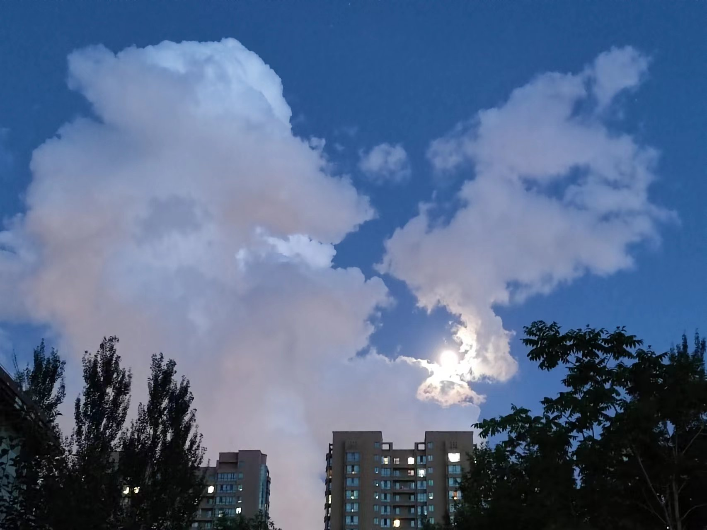
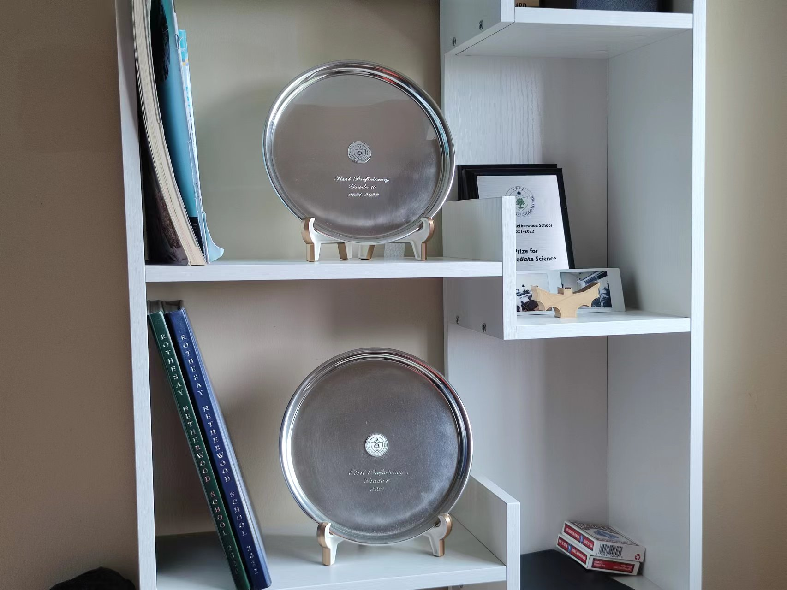
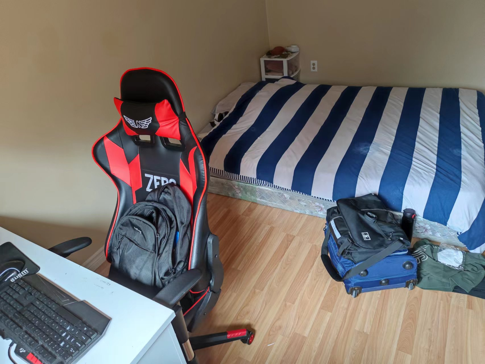

Alright, it's been a week or two. Not much has changed except my physical health.
Firstly, I chose to not keep going to the physics class. Instead, I opted to watch recordings of previous classes. There are two main benefits. First of all, I don't have to wake up at 7:30am every Saturday to attend those classes. Second of all, I can probably do two classes per week for recordings, meaning I can study at a faster pace, therefore I don't have to continue doing these classes after school starts.
However, this also means that I'm spending more time on this class, which means there's less time to do everything else. For example, I don't have time to learn math, or learn electrical science, or write my EE outline. None of the aforementioned has had any significant breakthroughs since the last entry.
My physical health doesn't help, either. I've caught a terrible cold since Wednesday. Although thankfully I have used the correct method so I had a fast recovery, for the past 3-4 days, I was still mainly dormant and I didn't do much work. I'm planning on returning to my normal routine today for exercises, and tomorrow for mental work. I'm still planning to finish everything on schedule, that is, before the end of the summer break.
By the way, there are some really cool and innovative stuff here in the online shops in China. I've never even thought of these designs and they're really helpful in our day-to-day life. I'm not sure if there's a particular reason behind this innovation, but I haven't seen anything like this anywhere else in the entire world.
Operation Beta is continuing as planned. Nothing to report this week.
I guess I'll end it here. There really isn't anything to talk about in these past two weeks, but there is still a lot of work to do.
Tuesday, July 19th, 2022
Cloudy
Well, not really an exciting week. Most of the time was spent on studying and with my family. I'm gonna make this brief since it's 10pm.
Firstly, I finished a course on derivatives. It is not exactly hard, however it is certainly challenging. I'm not sure if this will make me fully prepared, which is why I'm reading another book on all of calculus. I'm planning to finish that before the summer ends.
Secondly, I'm taking a course on physics. Right now it's mostly about work and energy, however, it is expected to cover most of the IB course later on. I think it might be helpful, and I'm purchasing the lessons on a class-by-class basis, so I can theoretically opt out at any time. I'm also learning electricity individually, which should prove to be helpful in the future.
Stuff is pretty great around here. I had lunch with Arthur Pan, who I haven't met for at least 3 years now, and we had some good talks. I just visited my old friend from kindergarten 李瑞轩, I spent the entire afternoon with him and his family, they all seemed well. He gave me a more holistic understanding of the current Chinese education system as he himself is a part of it.
I need to push more progress in my EE. However, since I already have a pretty good idea of the structure, it shouldn't be that hard to push for a good enough outline. I need to draft it and send it to McEvoy.
Also, one of my braces fell off. It was hanging on the metal wire, and I had to get it removed by a local orthondontist, and we're planning to put it back on back in Canada when the next appointment happens to ensure that the placement is correct. Oh boy is the appointment on Aug. 30th going to be painful.
The other operation has also been confirmed and put in place. The content of it is of too much secrecy to even be shared with anyone to begin with. Due to its importance, it shall be referred to as Operation Beta. The progress in Operation Beta is not significant, but steady. I will report on its progress without referring to its nature in this blog.
Anyways, as I said, not much has happened. I need to go write an email to my orthodontist about the issue, and then I need to go to sleep. Steven Li is planning to visit tomorrow, and I also need more sleep. I will end this entry with a beautiful photo I took in Harbin.

Tuesday, July 12th, 2022
Cloudy/Sunny
Goodbye Friends.
It's been a while. I was nearly stuck in Harbin, and issues kept coming my way, and I only gained access to my laptop now.
I bought and finished Nietzsche's Ecce Homo. It's hard to comment on it objectively, but speaking purely from my POV, this made me grow distaste of him and his philosophy. Obviously, I need to actually read his books to understand his philosophy fully, but the fact that it is only for a selected few means it's not going anywhere in the first place. No truth is held within the few.
On July 7th, I visited my paternal grandparents in Harbin. They were hospitalized shortly before my visit, however, both seems to be recovering at a decent pace and is currently in good condition, both mentally and physically. They live with my aunt and uncle, who work in the Harbin government.
I helped out with some chores and stuff. Hopefully I wasn't too much of a drag while I was there. I returned yesterday, and my dad is planning to stay there for another week before he returns.
The interesting part about this trip is that on the 8th, we started getting bombarded by disease controls across the country. I think I answered at least 5 or 6 phone calls. Then, on the 10th, my Beijing Health Code had a window, which meant I couldn't go back to Beijing. It was supposed to be there for 14 days. Frankly, me and my dad were ready to commit a crime and force our way back. Fortunately, the window was gone the next day, and it only delayed my schedule about 4 hours. No long term implications apply.
On the train back to Beijing I worked out a rough outline for my EE. The sections and major arguments are clear, and I should be able (at least by the looks of it) to prove the things I need in order to get a good essay. I would finish the outline during the summer, hence saving time next year.
A few more noteworthy events in the world. Roe v. Wade is completely overturned by the majority-conservative court in the U.S., which means that states can make abortion illegal at will. Unsurprisingly, a good number of the conservative states pushed laws immediately. In Ohio, for example, a 10 year old girl was raped and impregnated, yet despite the circumstances, she was refused abortion. Protests arise in the States and throughout the world. This, ultimately, is still class struggle, and I'm certain that people will see that soon.
In Japan, Shinzo Abe, the former prime minister of Japan, was assassinated on July 8th while speaking at a political event outside Yamato-Saidaiji Station in Nara. Two shots from a short-barrel shotgun. At 5pm, he was announced dead. There are many political implications of this event, and there are many mysteries surrounding it. For example, why was he assassinated? How did the killer bring the weapon in? Why were the guards not reacting after the first shot was fired? Hopefully, these questions would be answered in due time.
Finally, Technoblade, the famous Minecraft PVP youtuber, died of bone cancer. The cancer was developed a few months ago on his right arm, and he, at one point, considered amputation. A few months prior, he claimed he didn't need amputation since things were headed for the better, and on Jun. 30th, a new video was posted on his channel titled "So long nerds" signalling his death. His real name was Alex.
Wasn't exactly the best two weeks in my life. I would keep you posted next week as well. As of right now, I need to spend time with my family. I'll end it here.
Thursday, Jun 30, 2022
Cloudy/Sunny
Returned home 4 days ago, and I'm currently quarantining at home with my entire family. All covid tests return negative right now, so everything should be fine. Hopefully.
Without doubt, my grandparents' health are deteriorating. Its still hard to come to terms with the fact that people die eventually, and, despite knowing full well that its nothing to be too sad about, I still cannot control the fear of losing someone sometimes. However, as it looks right now, both my grandparents' health are not too terrible. My grandfather can still go up the stairs on his own (although he needs to take a break afterwards), and my grandmother's blood sugar is under relative control. Both of them have decent eyesight and hearing, and both of them are doing health checks every half a year, which displays no new issue or signs of old issues worsening.
I've been trying to, as long as I've been home, to spend as much time as possible with them. I also tried to take over a lot of the chores, since I don't want them to be working when I'm home.
The covid policies in China seems to be gradually loosening. The asterisk that used to exist on the health code are now universally cancelled, meaning people don't have to quarantine at all when travelling between any two cities within the country. The daily/weekly PCR test might also be lifted, and international quarantine time has also been shortened. In the news, it said some 92% of people are fully vaccinated. It seems that the pandemic is going away after all.
As for studying, I got an ipad for notetaking. It's my mom's old Ipad, and she doesn't want it anymore, so I bought it off of her for 500 Yuan. I've been taking notes with it since, it's pretty good overall. I've also been learning math with my grandfather. So far, I've learned quite some new stuff. Hopefully this would prove to be helpful in the future.
I finished both books I brought back to China. After my quarantine ends, I might begin to visit the book shop near my house to read some more.
The goal for this summer would just be to learn math and learn to cook. Beyond that, spend as much time as possible with my family. Everything else should be fine, and the EE is not something I should worry too much about right now.
It's getting late. I'll end this entry here.
Tuesday, Jun 21, 2022 (GMT + 8:00)
Cloudy
Successfully landed in Shanghai about a week ago. It is kind of hard to access github within the borders of China due to... certain reasons and issues. Consequently, this is my first entry after landing in Shanghai.
A lot of stuff happened between this and the last entry. First of all, the trip was a hard one. It would be an understatement to simply call the trip difficult, it was almost impossible. We were rejected from our initial flight in AC027 landing in Shanghai at Jun. 10th because our tickets were the cheapest. Capitalism at its best, once again. We had to seek another route, and we booked the same flight 3 days later, which landed in Shanghai at Jun. 13th, 6:00am local time.
Air Canada is absolutely terrible. Not only did they purposefully let us wait for 3 hours only to tell us that we're not leaving, they also made no effort to make up for it: no compensation, no plan to rebook, and incredibly rude service. They blamed the Chinese government for everything, but is it also the Chinese government's fault that they eliminate those who had the cheapest tickets just to maximize their profits?
Anyways, I was forced to sleep in the airport that night. It gets cold, insanely cold, in the airport, after 3:00am. It's a miracle I didn't catch a cold.
But I landed. My quarantine in Shanghai is expected to end next Monday, at the 27th, at which time I would proceed to fly to Beijing and quarantine in my house for 7 more days. Then I'm free.
On another note, report came out.
2021-2022 Final GPA: 98.0
Some other significant GPAs include Leo's (97.1), Amanda's (95.0), and Jessica's (96.3). Special attention needs to go towards Jessica, as she got 99 in mathematics, which is astonishing. The threat level system should be discarded entirely when dealing with her, as she exceeds any contemporary threat. Instead, measures should be taken to befriend her and attempt to overcome the threat in that manner.
Note, once again, that this is only her first half-a-year at RNS, and she got 96.3, only less than 1 GPA away from Leo and less than 2 GPA away from me.
Thirdly, I finished the Shakespearean play Twelfth Night. It tells a story of a series of confusion, which is supposed to be humourous (though I don't find it humourous at all). The ending, in my opinion, is a bit abrupt, and some issues still remain unsolved (i.e. Malvolio's revenge on Toby and Andrew). It is, however, one of the good comedies from Shakespeare. At least it wasn't very boring.
I would probably move on to read The Fire Next Time and keep posting about it on the blog. I'll also try to learn more math over the summer to prepare for my HL math course next year.
Anyways, everything works out so far. I'll go take a shower, and end it here.
Tuesday, Jun 7, 2022
Raining
The last week was more exciting than the previous three weeks combined. A lot of things happened, as a result, I'm currently in Toronto waiting for the PCR test result, incredibly sleep deprived.
First of all, awards ceremony and graduation went pretty well. I received the intermediate science award and the highest GPA in grade 10 (Governor's Silver), although the actual report won't be out until probably a few weeks later. This is quite a satisfactory (and rather surprising) result, given I thought I failed my exams.
Jessica's grades are still worth observing. I need at least somewhat of an idea of her GPA to chart a calculation, right now I have no idea and no prediction, hence no calculation for the future.

Next, Cole Gauthier, Yihong Chen, Cindy Xing, Beth McDade, Gabe Smith, and Marcus Kearsey officially left RNS for next year. Whether or not I will ever see any of them again is up to fate as of right now, however, I send my most sincere wishes to their futures, and I'm sure they'll all be successful in their respective fields that they pursue. Unfortunately, there is nothing in this world that does not end.
Moving on, I packed my stuff a few days earlier and prepared to leave for Toronto. However, the trip was not a straightforward one. The flight to Toronto got cancelled and rescheduled 4 times, eventually we had to transfer at Montreal, Quebec. We left for the airport on 4:00pm, Jun 6, while we originally planned to leave at 3:00am, Jun 5.
That's not all. The flight got delayed for 30 minutes again, and when we finally made it to Montreal, the flight once again was delayed for 30 minutes. Once we landed at Toronto at around 11pm local time (0:00am Atlantic Time), we had to wait another 30 minutes before we were allowed off. Once that happened, we sat around for 1 more hour waiting for our luggages, only to be told they won't arrive for another 2 hours. Therefore, we decided to go to the hotel first.
The good news is I'm travelling with Leo and Amanda, as well as their respective families, so the trip is at least not boring. I also brought two books, and I'm already a quarter way through the Shakespearean comedy Twelfth Night, which is, suprisingly, not that boring.
Just finished the PCR test and retrieved our luggage, it's raining outside, and I'm staying at the same hotel as I was last year, the Toronto Hilton hotel. Hopefully my test comes back negative. If so, we are doing one more antigen test tomorrow, and if all goes well, we're departing tomorrow night for Shanghai. I'll log the details of quarantine in my next entry if I do depart.

My dad is calling me for lunch. I'll end it here.
Wednesday, Jun 1, 2022
Sunny
The exams are over. For the past few weeks, I've been working on the exam reviews, and didn't have time to put any entries. Nevertheless, nothing really happened, so it doesn't really matter that much.
Exam returns are today, and I've had most of my exams back. I would edit this entry later on to add my final grades for the exams. Generally speaking, except for the stupid mistakes in math that brought my grade down to a 6, everything else worked out fine.
Speaking of exam returns, based on the results I got I was able to project an expected grade. Judging by my current grades, it should be somewhere around 97.8. This isn't the best nor worst case scenario, and there's plenty of space to adjust on both ends. In either case, I guess we'll find out whether or not I got the award for highest GPA in a few days.
The flight to China is basically secured. Unless I catch covid last-minute here, it seems pretty unlikekly that we're not going back. We adjusted the flight to Toronto to be on this Sunday, June 5th, along with Leo Sun and Amanda Li and their respective families.
Awards ceremony just banned me from entrance and I'm now waiting for my dad to deliver the proper "dress code". Why is dress code even a thing...? Anyways, doesn't actually matter.
Hosted a middle school Reach For The Top tournament the other week, everything went well, and stuff were according to plan. An RNS team came on top, obviously. I see some pretty hopeful future within our school's new generation of Reach players.
It's getting late and I can barely see my computer screen. I'll end it here.
English Final: 7
French, Science, Math Final: 6
History Final: 6.9
Thursday, May 12, 2022
Sunny
It's been a while since my last entry. Quite some stuff happened.
First of all, I'm officially in exam prep. I'm not sure what to expect from the exam, definitely a bit stressed and nervous right now, but hopefully everything will be in control.
For the trip back to China, there might be some issues. Air Canada is cutting down 40% of the passengers, so we're deciding by a draw for the spots on the plane, and I'm completely oblivious about my covid situation. If anything goes wrong, I would not be able to return. The good news is my grandparents are mentally prepared for it.
I went to watch the school play last week. The title is She Kills Monsters, and it's about DND. I hope they could've added more DND elements, like the actual dice, but overall its pretty good. The crew is taking off today to go to Dramafest.
Finished most of my assignments now. The final math project was to redesign a school building, I chose the squash court with Seven and Isaac, and we put together a blueprint, a budget, and a video. For the CE final project I did pygame, and I finished that as well, took a few all-nighters. I made it another euphemism about the communist movement in the 20th century and its eventual failure. There are also some other minor projects that happened.
Finished the book Born A Crime by Trevor Noah. I can't say I liked the book in particular, but it also wasn't that terrible. I guess no books are terrible after The Marrow Thieves, absolute trash.
Also, we won the school competition for the My Money My Future challenge, so we're going provincial. Need to talk to Leo again about whether we will send that cringe video of me or record a new one.
Debate Nationals also happened. We didn't exactly win (nobody in RNS did, Cole and Bex did pretty well though), but I got some stuff out of it. I can now improve my debate styles and use rhetoric a lot more effectively than before.
On another note, Beth McDade is confirmed to leave to the Netherlands. It's hard (but also easy) to imagine that someone who I've gotten used to be around will never be seen again. Ever. I guess that's just how life works sometimes. The same applies to the grade 12s, Yihong, Cole, Cindy, Melissa... I probably will never see even one of them again.
It's no time to be emotional, not yet. I have more work to do. I'll end this entry here.
Monday, April 25, 2022
Cloudy
New page! The last week was terribly busy.
First of all, Heads Cup was finished, and I won. I get absolutely nothing, but my name does go on the wall in dining hall, so I guess its decent.
Secondly, robotics happened. We didn't do that great because the sensors weren't calibrated perfectly, but I'm not that worried about it. The issue doesn't worry me because we're not gonna be placed anyways.
Thirdly, reach provincials happened. We won exactly 0 rounds, all the teams were pretty strong. Only one team was decently on-our-level, but we still lost with a tiny margin. However, our Intermediate and Junior teams did pretty well in general. I see some hope in the future.
Some stuff that I thought was supposed to happen last week ended up not happening. Discovery presentation was pushed to today, and chess regionals was cancelled. Instead, we're going straight to provincials this week Sunday.
Nats is also this week. So that's fun. A prep session happened yesterday at Cole's place, it wasn't that effective but I got some stuff out of it.
Finally, on Wednesday there is going to be a book talk. I'm going to be presenting. That means I need to stay at school from 330pm to 900pm. LITERALLY CANNOT WAIT.
Still in CE right now getting taught about HTML. Guess I'll end it here.
About Me
Random student. Chinese. Speaks Mandarin, English, French.
Communist. Studies in Canada currently (as of 2022).
Might stop updating the blog someday. Might update it forever. Who knows.